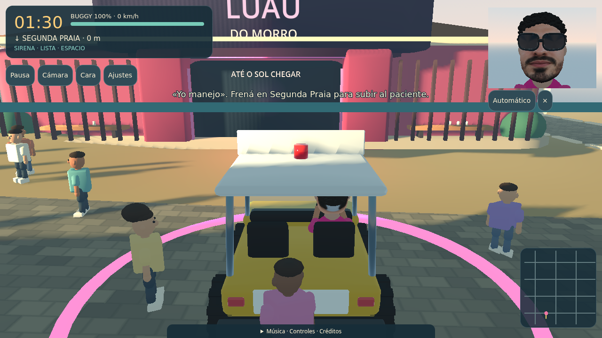
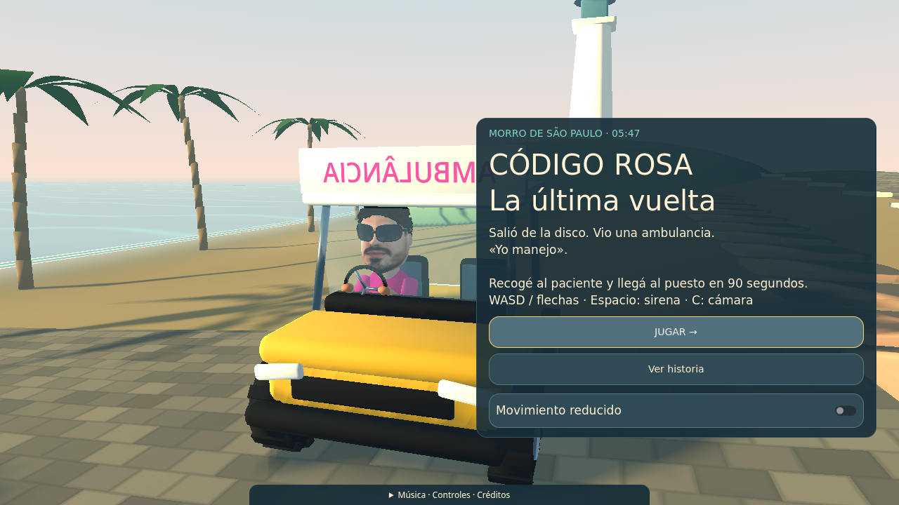
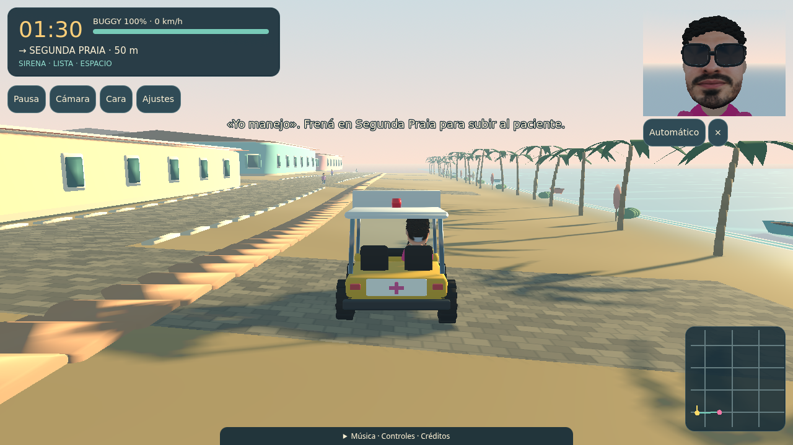
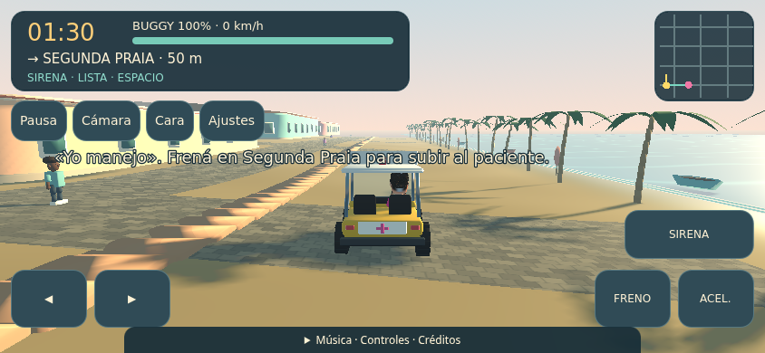

ANTESAHORAComparación de la versión Godot anterior y la renovación tropical: disco propia, fachadas modulares, peatones redondeados, costa con vegetación y materiales más suaves. El protagonista conserva la malla y las gafas aprobadas.

ANTESAHORA


Jugar la exportación local · Pruebas de presentación · Aprobación anterior del personaje
La aprobación del parecido se refiere a los recursos registrados en art-review.json. No se extiende automáticamente al escenario nuevo. Las pruebas de navegador emplean renderizado por software; el rendimiento en teléfonos y GPU reales sigue pendiente.